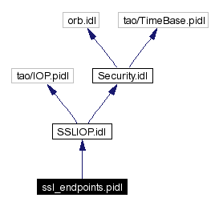

Main Page
Namespace List
Class Hierarchy
Alphabetical List
Compound List
File List
Namespace Members
Compound Members
File Members
ssl_endpoints.pidl File Reference
import "SSLIOP.idl";
Include dependency graph for ssl_endpoints.pidl:

Typedefs
typedef sequence<
SSLIOP::SSL
>
TAO_SSLEndpointSequence
Typedef Documentation
typedef sequence<
SSLIOP::SSL
> TAO_SSLEndpointSequence
Generated on Thu Jan 16 00:20:54 2003 for TAO_SSLIOP by
1.2.13.1 written by
Dimitri van Heesch
, © 1997-2001
 1.2.13.1 written by Dimitri van Heesch,
© 1997-2001
1.2.13.1 written by Dimitri van Heesch,
© 1997-2001